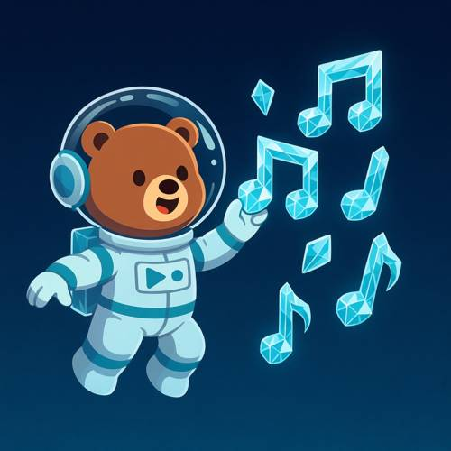
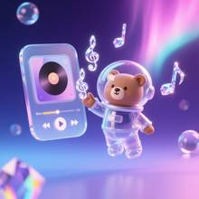

Compound — Please design a playback scene for a music App. A cartoon bear wearing
Please design a playback scene for a music App. A cartoon bear wearing a spacesuit floats to touch the musical symbols made of crystals. The overall style is a glass imitation.

Direct — one call, no iterationContinuum — Kimi K3 + Qwen-Image
Judge — Direct
PASSCompound - Imagination — The image depicts a cartoon bear wearing a spacesuit with a transparent helmet. The bear is positioned against a dark blue background as if floating in space. It is reaching out and touching one of several musical symbols that are rendered to look like they are made of faceted crystal.
PASSAttribute - Material — The musical symbols in the image, which include eighth and sixteenth notes, are depicted with multiple geometric facets and a translucent, light-blue, glowing quality, giving them the appearance of being made of crystal.
FAILStyle — The overall style of the image is a clean, 2D cartoon illustration with sharp lines and block colors, particularly on the bear and its suit. It is not a "glass imitation" style, which would imply a more transparent, refractive, or glassy texture throughout the entire composition, not just on specific elements like the helmet or symbols.
PASSAction - Full-body (Character/Anthropomorphic) — The full body of the cartoon bear is visible. It is depicted in a pose that suggests floating or weightlessness, with its feet not touching any surface. The bear is actively reaching out with its left hand to touch one of the musical symbols.
Judge — Continuum
PASSCompound - Imagination — The image depicts a cartoon bear wearing a spacesuit, including a clear helmet and a translucent suit. The bear is suspended in a floating pose. Around the bear are several musical symbols, specifically treble clefs and eighth notes, which are rendered with a faceted, crystalline appearance. The bear's left hand is raised and positioned near a treble clef, suggesting the action of touching it.
PASSAttribute - Material — The musical symbols in the image, which include treble clefs and eighth notes, are designed with a three-dimensional, faceted surface that refracts light, giving them the appearance of cut crystals or gemstones.
PASSStyle — The image consistently employs a glass imitation style. This is evident in the main music player interface, which is translucent and has a frosted-glass effect. The bear's spacesuit is also depicted as translucent or transparent, resembling glass. Other elements, like the floating bubbles, also contribute to the overall glassy aesthetic.
PASSAction - Full-body (Character/Anthropomorphic) — The image shows the full body of a cartoon bear in a floating posture, with its legs bent and its body suspended in the air. The bear is actively reaching with its left arm, its hand positioned just before making contact with a musical symbol, illustrating the action of floating to touch it.
What the agent did
Thinking
The user wants a playback scene for a music app: - A cartoon bear wearing a spacesuit - Floating to touch musical symbols made of crystals - Overall glass imitation style (glassmorphism aesthetic) Let me generate this with qwen-image as required by the policy. I should create a detailed visual prompt. Key elements: 1. Music app playback scene/UI 2. Cartoon bear in a spacesuit 3. Crystal musical notes/symbols 4. Glassmorphism/glass imitation style Let me craft a rich prompt covering these visual details.
Model
I'll design this music app playback scene with a glassmorphism aesthetic. Let me generate it.
Step 1 — `generate_image`
{
"prompt": "A music app playback scene rendered in glassmorphism style. A cute cartoon bear wearing a translucent glass spacesuit with a round bubble helmet floats weightlessly in the center, one paw reaching out to touch glowing crystal musical notes (eighth notes and quarter notes) that sparkle like cut gemstones. Behind the bear, a frosted glass music player interface panel floats with rounded corners: a glass album cover square, a translucent progress bar, glass play/pause and skip buttons with soft inner glow. The background is a dreamy gradient of deep violet and blue with soft pink aurora light, floating translucent glass orbs and bokeh. Everything has a polished glass imitation look: refraction, specular highlights, frosted blur, subtle rainbow dispersion on crystal edges. Soft ambient lighting, ethereal, high detail digital illustration, 3D render aesthetic.",
"model": "qwen-image"
}
Result img_0

Thinking
The first generation is actually quite good! Let me evaluate: ✅ Cartoon bear in a spacesuit - yes, cute bear with glass bubble helmet and translucent glass spacesuit ✅ Floating - yes, appears weightless ✅ Crystal musical notes - yes, crystalline/diamond-like music notes around ✅ Glass imitation style - strong glassmorphism: translucent panel, glass suit, refraction ✅ Music app playback scene - frosted glass player panel with vinyl record, progress bar, play/skip buttons Issues I can see: 1. There's text on the player panel: "Glass" and what appears to be "slp" — the prompt didn't ask for specific text, so this is decorative UI text. It looks a bit garbled ("slp"?). Let me inspect it closer. 2. The bear's paw is near the musical notes but maybe could be more clearly "touching" them. Actually, its paw is raised toward a treble-clef-like crystal symbol. Looks decent. 3. The vinyl record on the player is a nice touch. Let me zoom into the text area to check the rendered text. The policy says when the prompt asks for rendered text, verify by zooming. The prompt doesn't require specific text, so it's decorative — but if there's garbled text, it might look bad. Let me inspect the panel text region. The image looks quite good overall. Let me check the text on the player panel.
Model
The first generation looks strong — glassmorphism player panel, bear in glass spacesuit, crystal notes. Let me zoom into the small text on the player panel to check for garbled glyphs.
The zoomed crop shows: "Glass" on the left of the progress bar (like a track/artist label) and "slp" on the right (which looks like garbled text — probably meant to be a timestamp like "3:45"). The word "Glass" is actually spelled correctly. The "slp" is garbled/gibberish. Options: 1. Edit to replace "slp" with a proper timestamp like "3:45". 2. Or leave it — it's tiny decorative UI text. Since the user's prompt didn't request specific text, the garbled "slp" is a minor flaw but it's a visual imperfection in an otherwise polished image. A quick targeted edit: replace "slp" with "3:45" — a time display, which fits a music player. That's a small, targeted text fix. Let me do that edit. Per policy: for text specifically, name the incorrect string and the correct one. Don't re-describe the rest of the scene. Also let me check other areas — the top of the panel had small glyph marks too (a small "E" icon top-right of the album area, and some small marks bottom-left of the record). Those are tiny icons, acceptable. Let me fix the "slp" text.
Step 3 — `edit_image`
{
"image": "img_0",
"prompt": "Replace the small white text \"slp\" on the right end of the progress bar with \"3:45\" in the same small white sans-serif font. Keep everything else unchanged.",
"model": null
}
Result img_2
Thinking
The edit looks successful — "3:45" now appears at the right end of the progress bar. Let me verify by zooming into that text area to confirm the glyphs are correct.
Model
The edit applied. Let me verify the text region at full resolution.
The zoom shows "3:45" rendered correctly on the right, and "Glass" on the left (slightly stylized, reads "Glass" — the letters look like "G l a s s", acceptable). The timestamp fix worked. Now let me evaluate the full image against the prompt: 1. ✅ Music app playback scene — glass player panel with vinyl record, progress bar, play/skip buttons, timestamp 2. ✅ Cartoon bear in spacesuit — cute bear, bubble glass helmet, translucent glass spacesuit 3. ✅ Floating — weightless pose 4. ✅ Touching crystal musical symbols — paw raised toward crystal treble clef/notes; crystalline diamond-like notes floating around 5. ✅ Glass imitation style — glassmorphism throughout: frosted panel, translucent suit, refraction, bokeh bubbles Everything is present and correct. The bear's paw is touching/near a crystal treble clef. The image is polished. This is a good stopping point. Mark img_2 as best and stop.
Model
The "3:45" timestamp renders cleanly now, and "Glass" reads fine as the track label. The scene checks every requirement: - **Playback scene**: frosted-glass player panel with vinyl record, progress bar, timestamp, and play/skip controls - **Cartoon bear in spacesuit**: cute bear with a bubble glass helmet and translucent glass suit, floating weightlessly - **Crystal musical symbols**: faceted, gemstone-like treble clefs and notes that the bear reaches out to touch - **Glass imitation style**: glassmorphism throughout — refraction, frosted blur, specular highlights, iridescent edges, floating glass bubbles
Step 5 — `mark_best`
{
"image": "img_2",
"reason": "All prompt elements present and correct: glassmorphism music player with proper \"3:45\" timestamp (garbled text fixed), cartoon bear in glass spacesuit floating and touching crystal music notes, polished glass-imitation style."
}
Thinking
The image is complete and marked as best. I can stop here and summarize for the user.
Model
The design is complete. Here's the final playback scene: **Design summary:** 🐻 **Main character** — A cute cartoon bear astronaut in a fully translucent glass spacesuit with a bubble helmet, floating weightlessly as it reaches out to touch the crystal musical notes. 🎵 **Crystal music symbols** — Treble clefs and eighth notes rendered as faceted gemstones with diamond-like refraction and sparkle, scattered around the bear in mid-air. 🎧 **Playback interface** — A frosted-glass music player panel floats beside the bear, featuring: - A spinning vinyl record as the album art with a play button - A glowing progress bar with "Glass" track label and "3:45" timestamp - Glass skip and play/pause controls with soft inner glow ✨ **Glass imitation style** — The whole scene uses glassmorphism: frosted blur, light refraction, rainbow dispersion on edges, translucent bubbles, and a dreamy violet-blue aurora gradient background — perfect for a music app's playback screen.